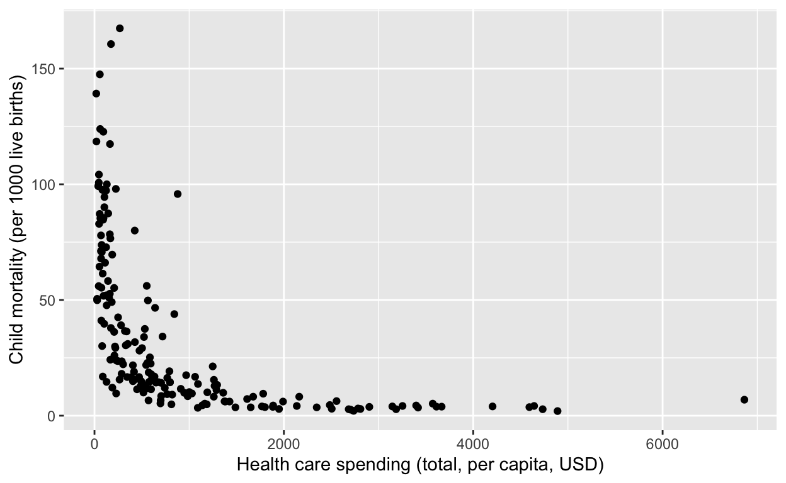
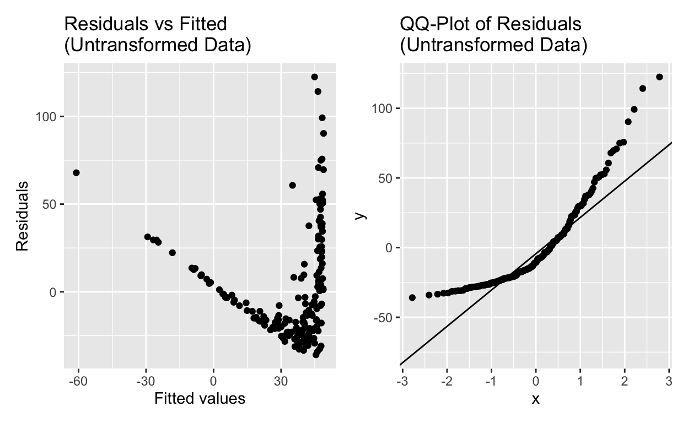
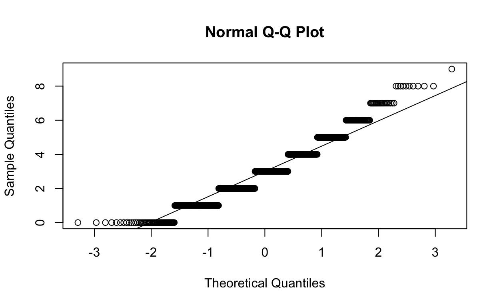
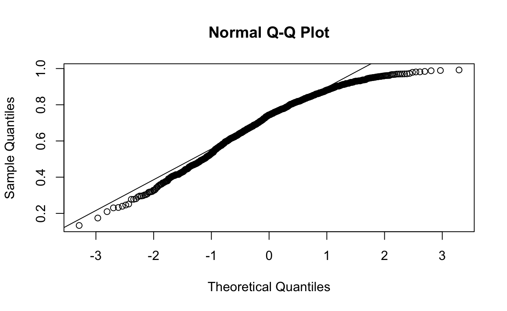
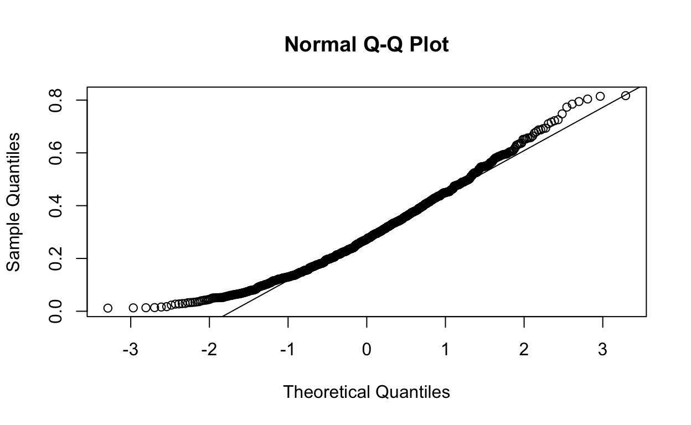
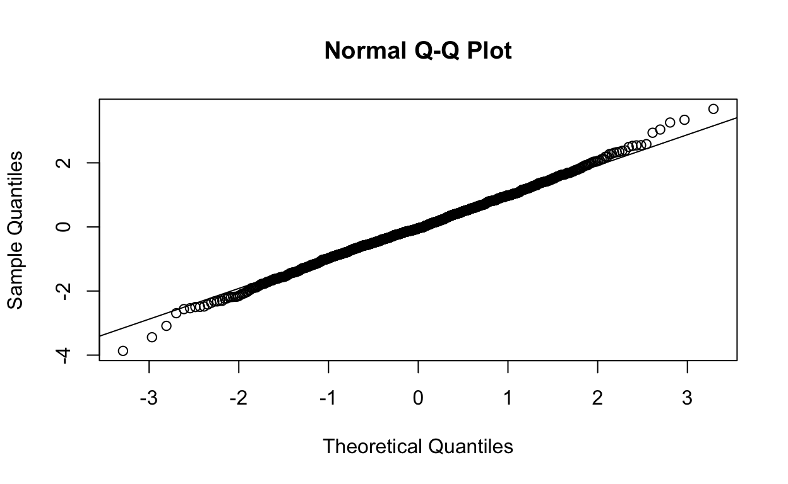
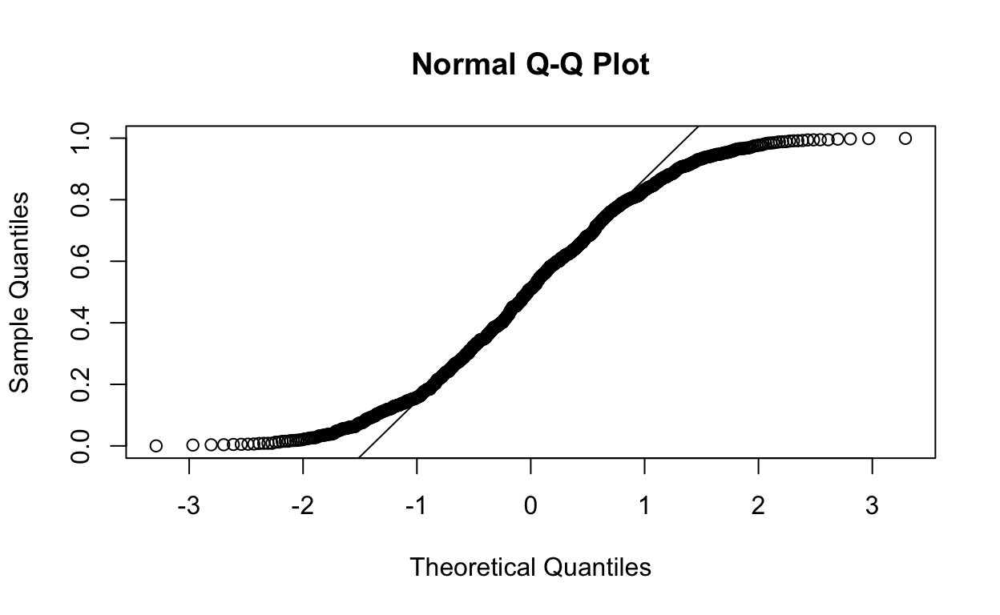

Introduction
On this web page you will find the homework, practical exercises and weekly quiz for Week 3 of BIO144.
All other information for the course is on the OLAT course webpages, and web pages linked to from there: OLAT BIO144 Info. Hub
Homework
Reading
This homework aims to help you learn how to do linear regression in R. The various steps involved are below.
- Being sure of the question and data. *
- Preparing your script (e.g., introductory comments, load libraries, etc).
- Read the data into R.
- Wrangle and quality control the data.
- Visualise the data, with question in mind.
- Make guesses of model parameters (intercept, slope) and statistical significance.
- Figure out degrees of freedom.
- Fit the line.
- Check the assumptions and whether they are badly violated.
(In Unit 4, we will interpret the regression model, for example by calculating and reporting R-squared, p-values, confidence intervals, etc.)
A great starting point for a demonstration and explanation of these steps, in R, is in Section 5.4 and 5.5 - 5.5.4 of Beckerman, Childs, and Petchey. This would be good to read and work through before the practical class.
Video walkthrough
You can, if you wish, watch and hear Prof. Petchey going through the analysis of the plant growth experiment in the two videos below. **Please note, however, that in these videos are quite old now and contain some older methods, such as an old method for making graphs. Please use the method in the book sections. More specifically, here is the code to use in place of the code in the videos, by line number of the code in the video:
Preliminaries: the videos do not load the packages ggplot2 and ggfortify. You must do this: library(ggplot2) and library(ggfortify).
Line 15. Use
ggplot(data=dd, aes(x = soil.moisture.content, y = plant.growth.rate))
Line 18. You obviously won’t be able to paste in the text here, as the text in line 15 in your script will be different (see above!).
Line 32-36. This is the old way to make a nice looking graph for communication. Replace this with a graph made with ggplot, by adding to and adjusting what you used in line 15. (On page 117 of Beckerman, Childs, and Petchey, you can see the code to make a relatively beautiful graph, in case you need a hand.)
Regression walkthrough – part 1
Regression walkthrough – part 2
The full R script of this walkthrough is here, though note that some comments have been added and hence the line numbers do not match those above. Note that there are four videos in this series. You will have a chance to see the other two videos in Week 4, when we cover interpretation of regression models.
Practical part 1
In this week’s in class practical you will continue working with the financing healthcare data from the practical session last week. You will also explore QQ-plots.
From last week, you should already have a script with the necessary preliminaries (though don’t assume you can use these without any changes – you might need some):
Being sure of the question and data. Here we are interested in if there is a relationship between healthcare spending in a country and child mortality in that country. To simplify the question, let’s ask that question for only 2013. I.e. is there a relationship between healthcare spending of a country and child mortality in that country in 2013.
Its a good idea to use all the available data, so make sure you use all available countries (rows) for which there is data for the two variables of interest.
Now, please make code to do the following:
- Read the data into R.
- Wrangle and quality control the data.
- Visualise the data, with question in mind.
Regression preliminaries include at least three steps, the first of which involves us looking at the graph we just made, of health care spending on the x-axis and child mortality on the y-axis:

Now for a really short step, though quite critical… we fit the regression model to the data.
As you’ve seen in the before class reading and viewing, fitting the regression model is just one line of R code:
my_model <- lm(??1?? ~ ??2??, data=??3??)
Finally, we need to check the assumptions of the regression model, to see if they are badly violated.
The transformation has helped us achieve a more nearly linear relationship, and the assumptions of the regression model do not appear to be badly violated. Well done!
In contrast, and you should try this, if you try to fit the regression model to the untransformed data, you will find that the assumptions are badly violated. You can see this by making the same diagnostic plots as above (histogram of residuals, and residuals vs fitted values). You should see a very non-normal distribution of residuals, and a clear pattern in the residuals vs fitted values plot. And a very non-linear QQ-plot of residuals too!

Potential sources of non-independence Recall that an assumption of linear regression is that the data points are independent. That is, the value of one data point does not influence the value of another data point. Or put another way, if one data value is larger than expected, that does not make it more likely that another data value is larger than expected.
Think about how our data points were produced. In this case, each data point (row of data) is information about a country. So the question is, is information from countries independent? Or the opposite: what might make information from countries non-independent. Lets look at things that could make data from countries non-independent.
First, groups of countries may share political systems (e.g. democracy, dictatorship, etc). Countries with the same political system may be considered as non-independent, as they share something in common. Geographic closeness may also be considered a source of non-independence. These things we could perhaps take into account in analyses. For now, however, we will ignore them.
Second, data for one group of countries may have been collected in a different way to data for another group of countries. We might not know about this; we might not be able to know about this. This kind of possibility we need to look for in the data itself, for example by looking at the residuals, as you’ve been doing.
In one of the last lectures of this course we will look at methods for dealing with non-independence in data, such as mixed effects models.
Practical part 2
Fun with QQ-plots
For a moment, we step outside the regression practical and have some fun with QQ-plots.
Linear regression (which is a type of linear model) requires some assumptions. One is that the residuals are normally distributed
How do we assess if the residuals are normally distributed? Interestingly, we mostly decide this by looking at graphs and making a visual assessment. There are quantitative / statistical tests, and we’ll show you one, but often looking at a suitable graph gives as much insight as the tests one could do.
There are two useful graphs. One is the frequency distribution (histogram) of the residuals. You’ve already used this type of graph to visualise and assess the shape of a distribution. The other is the QQ-plot (quantile-quantile plot).
Let’s play with these two ways of looking at distributions, using synthetic data, so we can be sure of how the data should be distributed.
Recap: Normally distributed residuals First make / synthesise some normally distributed residuals, by drawing some random numbers from the normal distribution. The function to do this in R is rnorm().
resids <- rnorm(30, 0, 1)
Then use ggplot to plot the distribution of these residuals. You know how to do this! Don’t forget to load the package that ggplot is in – you will get the error “Error: could not find function”ggplot”” if you forget to do this.
In this case, the distribution really should look normal, as we drew numbers from a normal distribution!
The QQ-plot is quite easy to make:
qqnorm(resids)
And we can put a line on where we expect the points to lie if the data is normally distributed:
qqline(resids)
Exploring and interpreting QQ-plots
The QQ-plot is a very valuable tool for assessing if the assumption of normally distributed residuals is justified.
In this exercise you will make a series of QQ-plots from synthetic data that we know the distribution of. Specifically, you will make QQ-plots of normally distributed data, of right skewed data, left skewed data, bimodal data, and even kurtotic data!
You will also use a tool that helps us interpret if odd looking QQ-plots really are odd or not (i.e. if one can say the assumption of normality is or is not justified).
For each of the following distributions, draw some random numbers, plot their distribution, and make the qq-plot. Use the code above as an example.
In a word (or other document) put the pairs of plots side by side. E.g., distribution of random numbers on the left, and qq-plot on the right.
Use the following distributions:
- A normal distribution, as above.
- A uniform distribution, using the function
runif() - A left-skewed distribution, using the code
rbeta(100,5,2) - A right-skewed distribution, using the code
rbeta(100,2,5) - A log-normal distribution, using the function
rlnorm - A Poisson distribution, using the function
rpois - A binomial distribution, using the function
rbinom
For some of these functions / distributions, you will need to choose parameter values, e.g., you will need to specify the mean of the Poisson distribution, and you will need to specify the size and probability for the binomial.
Your mission is to match the qq-plot to the distribution. This is an extremely relevant problem in data analysis. We might not know the distribution of our residuals, and so be using a QQ-plot to help us infer this distribution.
Don’t be fooled by each having the title “Normal Q-Q Plot”. They are not all showing the qqplot of normally distributed residuals.
And here is a quiz for you…
QQ-Plot 1

QQ-Plot 2

QQ-Plot 3

QQ-Plot 4

QQ-Plot 5

QQ-Plot 6

Weekly Quiz
Question 1 — What to do before fitting a linear model
Question 2 — Degrees of freedom (numeric)
Question 3 — What does a histogram of residuals tell us?
Question 4 — Response vs explanatory variable in
lm()
Question 5 — Least squares distances
Question 6 — Assumptions of simple linear regression
Question 7 — Checking assumptions after fitting a model
Question 8 — Diagnostic plots in ggfortify
Question 9 — Scale–location plot